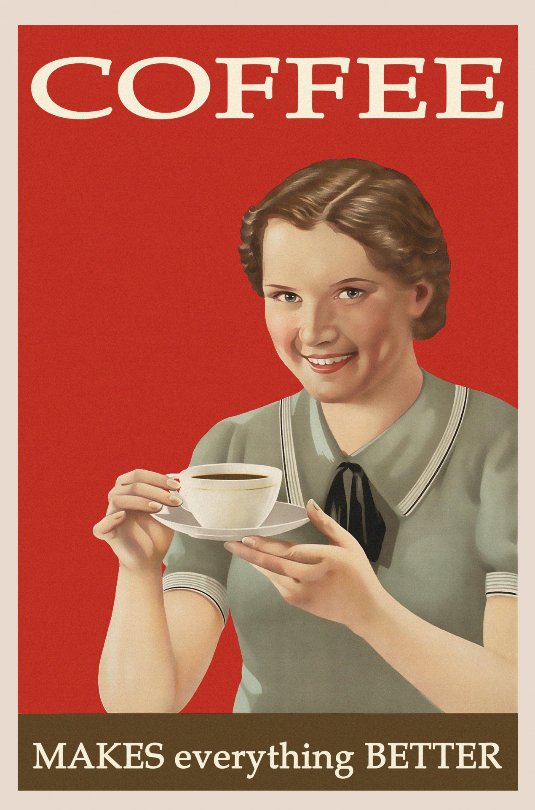

지금까지 배워 본 것을 생각 해보면 tag와 속성을 배웠다. 그리고 다운 받지 않아도 이미지를 넣을 수 있는 속성인 img src를 배웠다. 여기서 src는 source이다. 다운 받은 이미지를 그럼 한번 넣어보자
지금 내가 졸려서 먹고싶은 커피를 표현했다. 커피를 들고 계시는 서양인의 외모를 가진 여성분이 보인다. 매우 행복해 보이신다. 그녀가 커피를 들고 얼마나 행복해하는지 알 수 있는 대목인 것 같다. web12에서는 부모와 자식 태그라는 것을 배웠다. 이것은 근데 생각해보면 아주 단순한 것이었다. 어떤 태그를 쓸때 큰 코드가 있으면 아래 작은 코드가 있는느낌? 그런거 라고 나 혼자만 알아들을 수 있는 말로 적어보았다. 그래서 목록을 만드는 방법에 대해 배웠다. 위에 목록을 만들어 보겠다. 3가지 목록인데 이 목록들은 내가 열심히 하고싶은 것들을 모아놓은 것 이다. 저기서 ul코드는 다른 목록들과 구별하기 위해서 쓰는 부모코드 라고 생각하면 되고 li코드는 list로 저것이 목록코드라고 보면된다. 다른 관점에서보면 자식코드도 맞다. 코딩은 극단적으로 생각해야된다. 매일 쉬운문제 만 풀면 당연히 쉽지만 나는 그렇지 못한다. 승부욕을 통해서 나는 더 성장 할 수 있다. 갖은 억까에도 버텨서 나는 이겨낼 것 이다. 컴퓨터는 내가 여기다가 한글을 써도 한글로 저장하지 않는다. 왜냐 컴퓨터는 모든 문자를 0과 1로 표시하기 때문이다. 그런데 나는 왜 한글을 써도 한글로 표시가 되는 것 인가? meta charset -> 읽어라 char -> 문자를 utf-8로 읽어라 라고 하면 만약 결과값이 깨지더라도 그대로 읽어주기 때문에 유용하다.